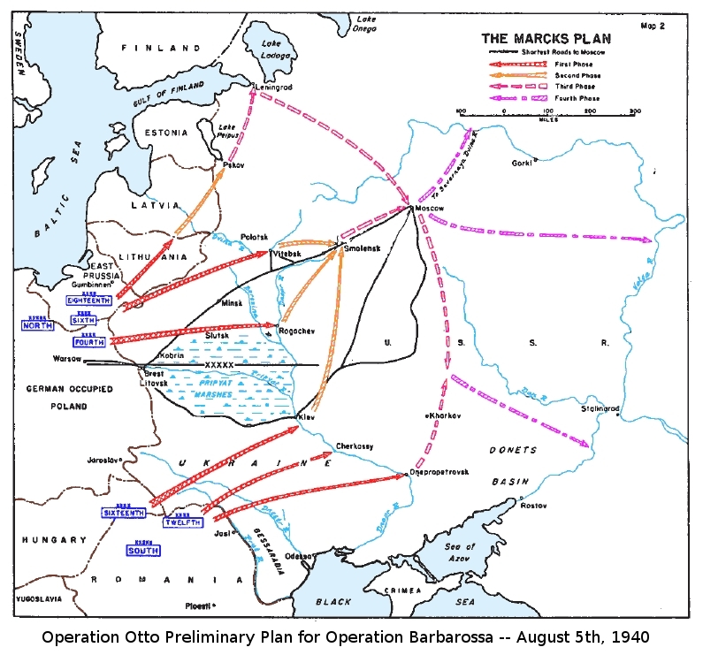
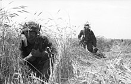

Plan operacji był przygotowany i podpisany przez Adolfa Hitlera 18 grudnia 1940 (dyrektywa nr 21). Pierwotnie przewidywano atak 15 maja 1941, ale z powodu obalenia proniemieckiego rządu księcia Pawła Niemcy musiały interweniować na Bałkanach oraz wspomóc włoskiego sojusznika w Grecji, dlatego atak przełożono na 22 czerwca 1941. Była to największa i najważniejsza operacja niemiecka w czasie wojny, której klęska zdecydowała ostatecznie o niemieckiej przegranej w całej wojnie. Walki na froncie wschodnim, gdzie realizowano operację „Barbarossa” były jednymi z najbrutalniejszych i najbardziej wyniszczających bitew II wojny światowej. Nazwa planu „Barbarossa” pochodzi od przydomku cesarza Fryderyka I Barbarossy. Pomysł użycia jego przydomku jako kryptonimu operacji podsunął Hitlerowi Alfred Jodl na naradzie sztabowej w grudniu 1940 roku. Wcześniej planowano nazwać ją Otto, później Fritz, ostatecznie jednak zadecydowano o użyciu nazwy Barbarossa.

W niedzielę 22 czerwca 1941 o godz. 3:15 rozpoczęła się operacja „Barbarossa”, uderzenie państw Osi na Związek Radziecki od Bałtyku po Karpaty. Państwa Osi zaangażowały siły wielkości ponad 4 milionów żołnierzy i była to największa operacja sił lądowych w historii. Oprócz 3 milionów Niemców, po stronie Osi walczyło m.in. ćwierć miliona Włochów i 300 tys. Rumunów. W zachodnich okręgach wojskowych ZSRR znajdowało się 2 517 054 żołnierzy Armii Czerwonej, którzy zostali całkowicie zaskoczeni atakiem. Sytuacja byłaby dla nich beznadziejna, gdyby nie trwająca od 14 czerwca 1941 sprawnie prowadzona mobilizacja Armii Czerwonej na stopę wojenną. W ciągu 9 dni od wybuchu wojny w różnych częściach ZSRR dodatkowo zmobilizowano 5 milionów ludzi. Spora część z nich uzupełniła straty pierwszego tygodnia wojny. W przemówieniu 3 lipca Józef Stalin wezwał do utworzenia ruchu partyzanckiego i walki przeciwko Niemcom.
wiecej
Przyczynami porażki Niemiec były źle określone cele operacji, niewydolność przygotowanego do operacji parku transportowego, kompletne zlekceważenie elementu polityki wewnętrznej ZSRR, potencjału gospodarczego, naukowego i militarnego. Wizja ZSRR jako „bezgłowego kolosa na glinianych nogach”, forsowana przez polityków i generałów Trzeciej Rzeszy okazała się fikcją, przydatną jedynie goebbelsowskiej machinie propagandowej. U podstaw takiej postawy leżała polityka rasowa, implikująca także politykę wobec ludności podbitej. Mimo początkowej dużej niechęci do stalinowskiego reżimu ludności zamieszkującej tereny zajęte przez Niemcy, na tych terenach nie udało się Niemcom utworzyć sojuszniczych armii, zwłaszcza że tego nie chcieli. Późniejsza zmiana polityki zaowocowała powstaniem jedynie nielicznych jednostek, a i tak postępowanie władz niemieckich wobec nich było chwiejne i niekonsekwentne
. wiecej